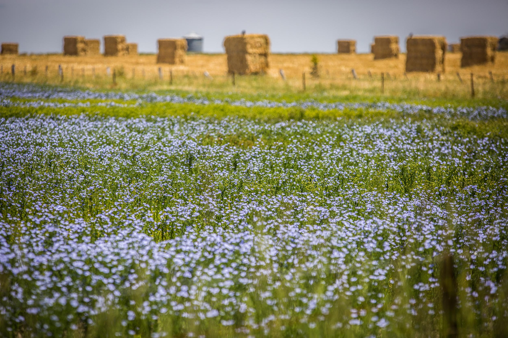
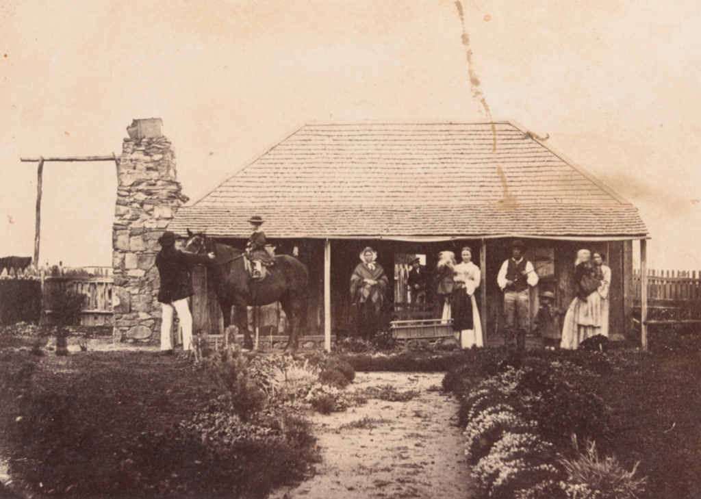

Welcome to the Golden Plains Stories! The shire is located north from metropolitan Melbourne
in between Ballarat and geelong. It has a population over 24000 people the Golden Plains Shire is a local
government
area consisting of 16 townships and 56 communities with its main economic industries specialising in
agriculture,
construction, and wine manufacturing. Discover the shires rich history through our web museum!
Agriculture is one of the main industries within the Golden Plains Shire. While the shire has been known
for its gold mining past, its farming has been a consistent area of primary production throughout
the years. When the settlers first came to the shire, the land was used for farming, sheep grazing and
timber cutting, particularly near the rivers. Additionally, the area has been historically known as
a wine producing area. Vineyards were located in Bannockburn Shire towards Batesford. The quality of the
areas wines was testified by the Weber brothers St James Vineyard, planted in the mid 1850s,
which in 1862 produced a prize winning white wine called Sobriety and red called Virtue.

Gold Mining
Gold Mining is very historical in the Golden Plains Shire. The Shire has had a long history with mining
with neighbouring gold rush cities, such as Ballarat
and Bendigo. In 1852 gold was first officially reported found at Mount Emu and Woady Yaloak. The
following year over one thousand diggers arrived in areas of
Smythesdale and Haddon, which alarmed authorities from actions of “drunkenness and riots”. In 1853,
Steiglitz opened up its first goldfield. With the discovery of gold in other
areas such as Linton, many riots broke out in other cities which involved police and commissioners.
Towns grew bigger with diggers moving with the discovery of more gold, which
prompted machinery and further development of gold mining.

Settlement
Settlement began in the 1830s when Europeans took over indogenous land, Wadawurrung Country. In between
the years of
1850 to 1860, the towns of Bannockburn, Linton, Scarsdale, Smythesdale and Steiglitz started to grow and
become more
populated. Additionally, with the construction of the railway in the late 1800s the population grew even
more. In 1970s
the shire saw more growth with post war settlement and significant development in the towns.
Just after the First World War, the government put in place purchase schemes for returned service
men as an incentive for
more settlement in the rural towns. Additionally this was put in place after the Second World War in
1945. Towns included in this were Meredith,
Shelford, Lethbridge and Bannockburn.